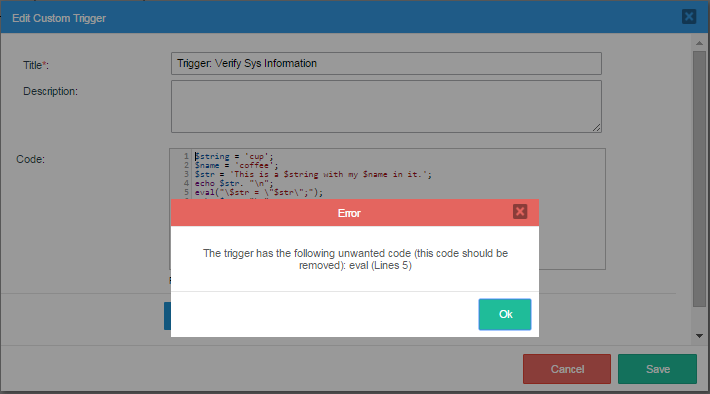

Overview
ProcessMaker offers the Plugin/Trigger Code Security Scanner feature. This feature allows analyzing source code from custom plugins and triggers in order to help find security flaws in the PHP code. Additionally, ProcessMaker administrators have the ability to create a black list of functions that can be used for arbitrary code execution in the server.
ProcessMaker scans the code of custom plugins and triggers in the following cases:
- Code scanning when a custom plugin is imported (it does not include ProcessMaker Enterprise plugins)
- Code scanning when enabling a custom plugin (when the plugin files are physically located in the plugins directory)
- Code scanning when importing a process.
- Code scanning when creating/modifying the code of a trigger.
- Code scanning when executing a case of a process that has triggers in the steps of its tasks (if the trigger has undesired code, it is not executed).
This feature allows checking the existing code of existing plugins and triggers in ProcessMaker with two new options added to the processmaker and gulliver commands. Additionally, the code is verified in designing time when a trigger is saved inside the designer, when a plugin is imported and/or when a plugin is enabled in ProcessMaker.
Installation
When the Enterprise Edition is installed with its license, the Plugin/Trigger Code Security Scanner feature becomes available. Go to ADMIN > Plugins > Enterprise Manager > Enterprise Features to verify that the codeScanner feature is installed and enabled.

Configuration
By default, this feature is not configured to scan new or existing code of plugins or triggers when ProcessMaker is installed or upgraded. Therefore, read following section to configure the feature and start the Code Scanner.
Configuring the env.ini File
To enable the Trigger/Code Security Scanner feature, it is necessary to add an additional attribute to the env.ini file. This configuration can be done in the env.ini file that each workspace has, in that way it will take effect only in those workspaces. Or, it can be done in the global env.ini file, for all the ProcessMaker Installation.
Locate the env.ini file:
Global location:
Workspace location:
Open the env.ini file with an editor and add the following line:
ProcessMaker 3.3.17 and later allows you to set which blacklisted activities to monitor. Use the code_scanner_scope parameter with the following arguments:
import_plugin: The plugins are scanned when uploaded.enable_plugin: The plugins are scanned when enabled.import_process: The code of the processes are scanned when uploaded.trigger: The code is scanned when creating, modifying or executing a trigger.
Creating a Custom Blacklist
The first step when working with this feature is to create the file that will contain the list of functions that should be evaluated in ProcessMaker. To do this, create a new plain file using your favorite text editor such as Notepad ++ and name it blacklist.ini.
Add the PHP functions (These functions are listed in the following section) that will be evaluated by the code scanner. For example, the file could contain the following options:
;=======
DashletInterface
;Functions
;=========
eval
exec
assert
preg_replace
create_function
;Information Disclosure
;======================
phpinfo
posix_mkfifo
posix_getlogin
posix_ttyname
getenv
get_current_user
proc_get_status
get_cfg_var
disk_free_space
disk_total_space
diskfreespace
getcwd
getmygid
getmyinode
getmypid
getmyuid
Check this useful information about exploitable PHP functions.
Now, add this file to the following route in ProcessMaker:
These are all the steps needed to configure the code scanner in ProcessMaker.
Functions Blacklisted by Default in ProcessMaker's Public Cloud Environments
The following functions are included by default in the blacklist file in each ProcessMaker Public Cloud environment (Enterprise Trial, Sandbox, and Enterprise):
apache_child_terminate
apache_get_modules
apache_get_version
apache_getenv
apache_lookup_uri
apache_request_headers
apache_response_headers
apache_setenv
array_diff_uassoc
array_diff_ukey
array_filter
array_intersect_uassoc
array_intersect_ukey
array_map
array_reduce
array_udiff
array_udiff_assoc
array_udiff_uassoc
array_uintersect
array_uintersect_assoc
array_uintersect_uassoc
array_walk
array_walk_recursive
bcompiler_load
bcompiler_load_exe
bcompiler_parse_class
bcompiler_read
call_user_func
call_user_func_array
call_user_method
call_user_method_array
chdir
chgrp
chmod
chown
chroot
class_alias
class_exists
classkit_method_add
classkit_method_redefine
classkit_method_rename
closelog
com_event_sink
com_get_active_object
com_load_typelib
com_print_typeinfo
constant
copy
create_function
dba_open
dba_popen
debug_backtrace
debug_print_backtrace
delete
dir
dirname
dl
eio_chmod
eio_chown
eio_lstat
eio_mknod
eio_nop
eio_open
eio_read
eio_readahead
eio_readdir
eio_readlink
eio_realpath
eio_rename
eio_rmdir
eio_sendfile
eio_stat
eio_statvfs
eio_symlink
eio_sync
eio_sync_file_range
eio_syncfs
eio_truncate
eio_unlink
eio_utime
eio_write
error_get_last
error_log
error_reporting
eval
event_buffer_set_callback
exec
expect_popen
file
file_get_contents
file_put_contents
finfo_open
flock
fopen
forward_static_call
forward_static_call_array
fsockopen
ftp_connect
ftp_exec
ftp_get
ftp_put
ftp_raw
ftp_site
get_defined_vars
get_include_path
get_included_files
get_loaded_extensions
get_required_files
getcwd
getenv
getrusage
getservbyname
getservbyport
gupnp_control_point_callback_set
gupnp_device_action_callback_set
gupnp_service_proxy_add_notify
gupnp_service_proxy_callback_set
gzopen
header
header_register_callback
header_remove
headers_list
highlight_file
ibase_set_event_handler
ignore_user_abort
ini_alter
ini_get
ini_get_all
ini_restore
ini_set
interface_exists
iterator_apply
ldap_set_rebind_proc
mb_ereg_replace_callback
memory_get_peak_usage
mysqli_set_local_infile_handler
mysqlnd_ms_set_user_pick_server
mysqlnd_qc_set_is_select
mysqlnd_qc_set_user_handlers
newt_component_add_callback
newt_set_help_callback
newt_set_suspend_callback
nsapi_virtual
ob_start
oci_register_taf_callback
opendir
openlog
override_function
parsekit_compile_file
parsekit_compile_string
passthru
pcntl_exec
pcntl_setpriority
pcntl_signal
pfsockopen
php_ini_loaded_file
php_ini_scanned_files
php_sapi_name
php_strip_whitespace
php_uname
phpcredits
phpinfo
phpversion
posix_access
posix_ctermid
posix_getcwd
posix_getgrgid
posix_getgrnam
posix_getgroups
posix_getlogin
posix_getpwnam
posix_getpwuid
posix_kill
posix_mkfifo
posix_mknod
posix_ttyname
posix_uname
preg_replace
preg_replace_callback
preg_replace_callback_array
proc_nice
proc_open
putenv
readgzfile
readline_callback_handler_install
register_shutdown_function
register_tick_function
rename_function
restore_error_handler
restore_exception_handler
restore_include_path
runkit_import
runkit_sandbox_output_handler
scandir
session_abort
session_commit
session_create_id
session_decode
session_destroy
session_encode
session_get_cookie_params
session_id
session_module_name
session_name
session_regenerate_id
session_register_shutdown
session_reset
session_save_path
session_set_cookie_params
session_set_save_handler
session_start
session_status
session_unset
session_write_close
set_error_handler
set_exception_handler
set_include_path
set_local_infile_handler
set_time_limit
setcookie
setrawcookie
shell_exec
shmop_open
show_source
socket_create
socket_create_listen
socket_set_blocking
socket_set_timeout
spl_autoload
spl_autoload_extensions
spl_autoload_register
spl_autoload_unregister
sqliteCreateFunction
stream_context_create
stream_context_set_default
stream_context_set_option
stream_context_set_params
stream_copy_to_stream
stream_filter_register
stream_get_contents
stream_get_line
stream_get_transports
stream_get_wrappers
stream_resolve_include_path
stream_socket_client
stream_socket_recvfrom
stream_socket_sendto
stream_socket_server
stream_wrapper_register
svn_checkout
svn_commit
svn_update
sys_get_temp_dir
syslog
system
trait_exists
trigger_error
uasort
uksort
user_error
usort
version_compare
virtual
win32_create_service
win32_start_service
win32_stop_service
xml_set_character_data_handler
xml_set_default_handler
xml_set_element_handler
xml_set_end_namespace_decl_handler
xml_set_external_entity_ref_handler
xml_set_notation_decl_handler
xml_set_processing_instruction_handler
xml_set_start_namespace_decl_handler
xml_set_unparsed_entity_decl_handler
xmlrpc_server_register_introspection_callback
xmlrpc_server_register_method
yaml_emit
yaml_emit_file
yaml_parse
yaml_parse_file
yaml_parse_url
zend_version
Checking the Code of Plugins and Triggers
There are two levels of code verification with the code scanner of ProcessMaker:
When adding new code
After this feature has been configured, all input code in triggers will be verified inside the code editor in the designer:

Already uploaded plugins are verified after they are Disabled and then Enabled:

This feature also scans the code of plugins at the moment they are imported.
For already added code
check-plugin-disabled-code: This feature adds the following option to the./gullivercommand that shows the information of undesired code in plugins already uploaded to ProcessMaker. To execute this command, first go to the:cd <INSTALL-DIRECTORY>/gulliver/bin Then, execute the command as follows:
Linux:
./gulliver check-plugin-disabled-code plugin-type Windows:
php.exe -f gulliver check-plugin-disabled-code plugin-type Where the plugin-type can be:
enterprise-pluginwill check all the Enterprise Plugins installed.custom-pluginwill check all the Custom Plugins installed.allwill check all the plugins.plugin-namewill check only the plugin with the name specified.

check-workspace-disabled-code: The following option is added to the./processmakercommand to check the code and shows information about the workspaces with undesired code in triggers. To execute this command, first go to the:cd <INSTALL-DIRECTORY>/processmaker Then, execute the command as follows:Linux:
./processmaker check-workspace-disabled-code workspace-name Windows:
php.exe -f processmaker check-workspace-disabled-code workspace-name